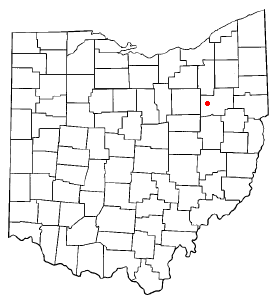

Named in honor of French court bishop Jean Baptiste Massillon
Nickname: Tiger Town
Motto: City of Champions
Land in square miles: 18.97
Elevation: 948 ft
Location in Ohio:

Famous Massillonians:
Herman Albrecht (1885-1961)- Architect
Paul Brown (1908-1991) - Football Coach
David Canary (1938-2015) - Actor
Jacob Coxey (1854-1951) - Political Figure & Labor Rights Activist
Lillian Gish (1893-1993) - Silent Film Actress
Massillon Tigers Football:
Notable Alumni
Paul Brown - former Ohio State University, Cleveland Browns, and Cincinnati Bengals Coach
Chris Spielman - former Ohio State University Play and former NFL All-Pro Linebacker
Paul Brown Tiger Stadium
Completed in 1939 through Works Progress Administration Program
Stadium currently holds 16,884 people
Named after former Tiger player and head coach Paul Brown
Hosts numerous Ohio High School Athletic Association state football playoff and dvisional championship games
Hosts the annual Pro Football Hall of Fame drum and bugle corps competition
Paul L David Athletic Training Center
Built in 2008 by local philanthropist Jeff David in honor of his late father
Largest indoor football practice facility in the state of Ohio at 80,000 square feet
Go swimming at the Massillon Rec CenterRelax at Sippo Lake ParkTour Spring Hill Historic HomeCheck out what's new at Massillon Public LibraryHike or Bike along the Ohio and Erie Canal Towpath